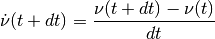
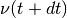

Simulation loop¶
Overview¶
A simulation can be ran using the arboris.core.simulate() function, which is indeed very simple:
def simulate(world, time):
world.init()
previous_t = time[0]
for t in time[1:]:
dt = t - previous_t
world.update_dynamic()
world.update_controllers(dt, t)
world.update_constraints(dt)
world.integrate(dt)
previous_t = t
Let’s detail the various steps.
update_dynamic()¶
The update_dynamic() method computes the
matrices of the world model in generalized coordinates. We’ll denote
respectively  ,
,  and
and  the mass, viscosity and non-linear effects
matrices.
the mass, viscosity and non-linear effects
matrices.
At this step, the world “unactuated” model is
where  is the generalized velocity vector and its time
derivative.
is the generalized velocity vector and its time
derivative.
Note that there is no contact, actuation or even gravity involved yet.
update_controllers()¶
The update_controllers() method completes the model with “actuation” forces provided by the controllers. Actuation is here taken in a broaden meaning and may actually include weight (from arboris.controllers.WeightController).
Considering the following integration scheme

we get this first order free model
which is then completed by the controllers first-order actuation force:
It is the responsability of each controller to provide both and when its update() method is called by update_controllers().
The actuated model is then

Introducing the world impedance  and admittance
and admittance  .
.

leads to a more compact expression:
The role of the update_controllers() method
is to compute , and and to save them
respectively in the world _impedance,
_admittance and
_gforce properties.
update_constraints()¶
Additionnal constraints such as contacts or kinematic loops are handled by the update_constraints() method which solves them iteratively using a Gauss-Seidel algorithm. It results in a constant generalized force for each constraint which is added to the actuation ones in the world _gforce property.
The resulting model is:
integrate()¶
From the previous equation, this method computes  and then
calls each joint  integrate() method which
updates the joint generalized position .
integrate() method which
updates the joint generalized position .
That’s it, the world state (generalized positions and velocities) has been updated to and all the model matricies are now outdated.